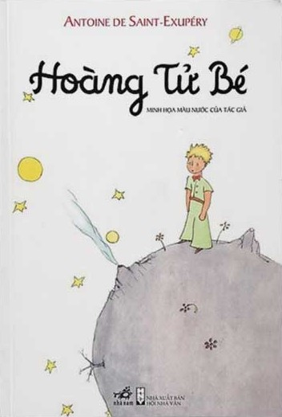
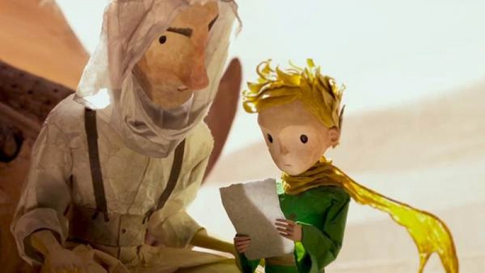
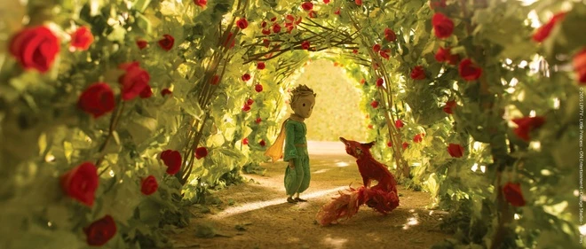
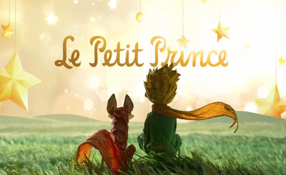

Hoàng Tử Bé
"Tất cả những người lớn đều từng là trẻ con... nhưng rất ít người trong số họ nhớ được điều đó." Một thế giới cổ tích đầy chất thơ, nơi ta học lại cách yêu thương, cách cảm hóa và nhìn đời bằng đôi mắt của một đứa trẻ.

Về Tác Phẩm
Chuyến hành trình kỳ diệu đánh thức những tâm hồn đã ngủ quên trong bận rộn đời thường.

Điều kỳ diệu từ một cuốn sách mỏng
Xuất bản lần đầu tiên vào năm 1943, "Hoàng tử bé" (Le Petit Prince) của Antoine de Saint-Exupéry không đơn thuần là một tác phẩm dành cho thiếu nhi. Đây là một câu chuyện ngụ ngôn triết học sâu sắc về cuộc sống, tình yêu, tình bạn và sự cô đơn.
Thông qua cuộc gặp gỡ tình cờ giữa người phi công bị rơi máy bay ở sa mạc Sahara và một cậu bé kỳ lạ đến từ tiểu hành tinh B612 xa xôi, tác phẩm phơi bày những thói hư tật xấu, những sự ngớ ngẩn và khô cằn trong thế giới của người lớn.
Cuốn sách đã được dịch ra hơn 300 ngôn ngữ, bán được hơn 200 triệu bản trên toàn thế giới và trở thành một trong những tác phẩm bán chạy nhất mọi thời đại.
Hành Trình Qua Các Vì Sao
Chuyến du hành tìm kiếm ý nghĩa cuộc sống qua các tiểu hành tinh từ B612 đến Trái Đất.
Tiểu Hành Tinh B612
Hành tinh quê nhà của Hoàng tử bé vô cùng nhỏ bé, chỉ lớn hơn một ngôi nhà một chút. Ở đó có ba ngọn núi lửa cao ngang đầu gối (trong đó có hai ngọn đang hoạt động và một ngọn đã tắt), những cây bao sáp khổng lồ luôn đe dọa tàn phá hành tinh nếu không được nhổ rễ kịp thời, và đặc biệt là sự xuất hiện của một Bông Hồng kiêu kỳ.
Ý nghĩa: B612 đại diện cho thế giới nội tâm tinh khiết của mỗi đứa trẻ. Những cây bao sáp chính là những thói xấu, những suy nghĩ tiêu cực cần phải được phát hiện và dọn dẹp hàng ngày trước khi chúng lớn lên và phá hủy tâm hồn ta.

Tinh Cầu Của Vị Vua Quyền Lực
Hành tinh thứ nhất là nơi ngự trị của một vị vua mặc áo choàng đỏ viền lông chồn, ngồi trên một ngai vàng đơn giản nhưng uy nghiêm. Ông tự cho mình là người cai trị toàn bộ vũ trụ và các ngôi sao. Thực chất hành tinh của ông trống rỗng và ông không có thần dân nào cả ngoại trừ một con chuột già.
Bài học sâu sắc: Vị vua đại diện cho thói hám quyền lực mù quáng của người lớn. Trớ trêu thay, quyền lực tối thượng của ông chỉ có giá trị khi ông ra lệnh cho mọi người làm những việc họ vốn dĩ sẽ làm (ví dụ ra lệnh cho mặt trời lặn vào buổi tối).
Gã Khoác Lác Ưa Nịnh
Hành tinh thứ hai là nơi cư ngụ của một gã khoác lác. Gã đội một chiếc mũ kỳ lạ để chào đáp lại mỗi khi có người vỗ tay tán thưởng gã. Gã chỉ muốn nghe những lời khen ngợi và muốn Hoàng tử bé công nhận gã là người đẹp trai nhất, ăn mặc đẹp nhất, giàu có nhất và thông minh nhất trên hành tinh.
Bài học sâu sắc: Đại diện cho lòng kiêu hãnh hão huyền và sự ảo tưởng của con người. Những kẻ ưa nịnh chỉ có tai để nghe những lời tâng bốc mà bỏ qua mọi sự thật thực tế xung quanh.
Gã Nát Rượu Luẩn Quẩn
Cuộc viếng thăm hành tinh này vô cùng ngắn ngủi nhưng lại khiến Hoàng tử bé buồn bã sâu sắc. Cậu thấy một gã nát rượu ngồi im lặng trước hàng đống chai lọ rỗng tuếch và chai lọ đầy ắp. Khi hỏi tại sao uống rượu, gã trả lời: "Để quên đi nỗi xấu hổ vì đã uống rượu".
Bài học sâu sắc: Đại diện cho vòng lặp luẩn quẩn và sự bế tắc của người lớn khi đối mặt với khó khăn. Thay vì tìm cách sửa chữa sai lầm, họ lại dùng chính sai lầm đó để trốn tránh thực tại.
Nhà Doanh Nghiệp Bận Rộn
Hành tinh thứ tư thuộc về một nhà doanh nghiệp. Ông ta bận rộn đến mức thậm chí không ngẩng đầu lên khi Hoàng tử bé đến. Ông ta dành cả đời để đếm các ngôi sao, tin rằng mình sở hữu chúng vì chưa có ai nghĩ đến việc sở hữu chúng trước ông. Ông viết số lượng sao lên giấy và khóa nó lại trong ngăn kéo.
Bài học sâu sắc: Phê phán sự tham lam vô nghĩa của con người hiện đại. Sở hữu những thứ ta không thể tương tác hay chăm sóc là điều vô giá trị. Hoàng tử bé sở hữu một bông hồng vì cậu tưới nước cho nó, nhưng nhà doanh nghiệp chẳng có ích gì cho những vì sao cả.
Người Thắp Đèn Tận Tụy
Hành tinh này rất kỳ lạ, nó là hành tinh nhỏ nhất trong số các hành tinh, chỉ đủ chỗ cho một cây đèn đường và một người thắp đèn. Hành tinh quay nhanh đến mức cứ mỗi phút là trôi qua một ngày, buộc người thắp đèn phải liên tục thắp và tắt đèn mà không được nghỉ ngơi một giây nào.
Bài học sâu sắc: Mặc dù Hoàng tử bé thấy hành động này kỳ quặc, cậu vẫn yêu quý người thắp đèn nhất vì ông là người duy nhất nghĩ đến việc khác chứ không chỉ nghĩ đến bản thân mình. Ông đại diện cho tinh thần trách nhiệm và lòng tận tụy, dù đôi khi nó mang tính máy móc mù quáng.
Nhà Địa Lý Thụ Động
Hành tinh thứ sáu lớn gấp mười lần hành tinh trước, nơi cư ngụ của một cụ ông đang viết những cuốn sách khổng lồ. Ông tự xưng là nhà địa lý nhưng lại không hề biết trên hành tinh của mình có sông, núi hay sa mạc không, vì ông không bao giờ rời khỏi bàn làm việc. Ông chỉ ghi chép lại lời kể của những nhà thám hiểm.
Bài học sâu sắc: Chỉ trích những kẻ chỉ biết lý thuyết sáo rỗng, thiếu trải nghiệm thực tế. Chính nhà địa lý này đã định nghĩa bông hồng của Hoàng tử bé là vật "phù du" (sắp biến mất), thúc đẩy cậu bé lên đường tìm kiếm thứ bất tử và chọn Trái Đất làm điểm đến.
Trái Đất Bao La Và Những Cuộc Gặp Gỡ
Trái Đất không giống các hành tinh khác. Nó có hàng trăm vị vua, hàng ngàn nhà địa lý, hàng triệu nhà doanh nghiệp... Tại đây, Hoàng tử bé đã trải qua những cung bậc cảm xúc lớn lao: cậu đau khổ khi phát hiện ra một vườn hoa có tới 5000 bông hồng giống hệt bông hồng của mình; cậu gặp và cảm hóa chú Cáo; cậu kết bạn với người Phi công và cuối cùng hiểu ra giá trị thực sự của sự gắn kết.
Bài học sâu sắc: Trái Đất là nơi tổng hòa mọi tính cách và là nơi Hoàng tử bé tìm thấy câu trả lời cho tình yêu của mình. Nhờ chú Cáo, cậu nhận ra bông hồng của mình là duy nhất trên đời bởi vì cậu đã dành trọn trái tim để chăm sóc nàng.

Những Cuộc Gặp Gỡ Định Mệnh
Mỗi nhân vật là một mảnh ghép ẩn dụ cho những bản tính sâu kín của con người.
Hoàng Tử Bé
Nhân vật chínhĐại diện cho sự ngây thơ, thuần khiết và trí tò mò không giới hạn của trẻ thơ. Cậu luôn đặt những câu hỏi cho đến cùng và nhìn nhận thế giới bằng trái tim rộng mở, không bị vẩn đục bởi những định kiến vật chất của người lớn.
Bông Hồng Kiêu Kỳ
Tình yêu & Trách nhiệmNàng hoa kiêu ngạo, đỏng đảnh và lắm lời với bốn chiếc gai nhọn tự vệ. Dù đôi khi làm tổn thương Hoàng tử bé, nàng thực chất vô cùng yếu đuối và yêu cậu tha thiết. Nàng chính là biểu tượng của tình yêu đôi lứa - cần sự kiên nhẫn và thấu hiểu.
Con Cáo Triết Lý
Tình bạn & Sự Cảm HóaMột nhân vật thông thái xuất hiện tại sa mạc Trái Đất. Chú Cáo đã dạy cho Hoàng tử bé định nghĩa về sự "cảm hóa" (gắn kết thiết lập mối quan hệ) và tặng cậu bí mật lớn nhất cuốn sách: "Những gì thực sự giá trị thì vô hình đối với mắt trần."
Danh Ngôn Bất Hủ
Những câu chữ chạm đến trái tim và thay đổi cách nhìn của bạn về cuộc đời.
Thư Viện Tranh Minh Họa
Chiêm ngưỡng những hình ảnh tuyệt đẹp trong thế giới mơ mộng của Hoàng tử bé.